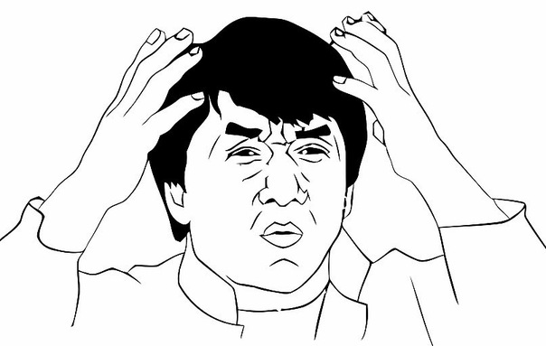

Tu n'espaston code
Cédric Spalvieri
CTO Novaway
- psychologie dans le hacking
- psychologie dans le marketing
- psychologie dans le design d'expériences
- psychologie dans le dev ?
Quality is value to some person
Dissonance
Cognitive

He that has once done you a kindness will be more ready to do you another, than he whom you yourself have obliged.
Et le code
dans tout ça
?
egoless
programming
#1
Understand and accept that you will make mistakes
#2
You are not your code.
#3
No matter how much karate you know, someone else
will always know more.
#4
Don't rewrite code without consultation.
#5
Treat people who know less than you with
respect, and patience.
#6
The only constant in the world is change.
#7
The only true authority stems from knowledge,
not from position.
#8
Fight for what you believe, but gracefully
accept defeat.
#9
Don't be
"the guy in the room".
"the guy in the room".
#10
Be kind to the coder, not to the code.